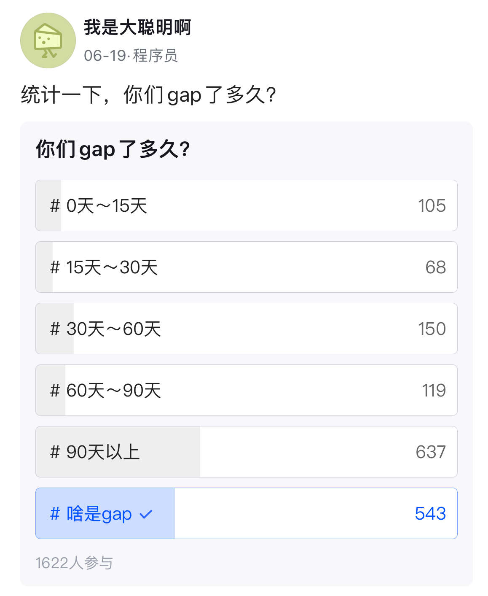

The blockchain hasn’t had much excitement in the past year or two. Since ETH dropped from 3400 to 1200, which coincided with the Fed’s most aggressive rate hikes, the market has been in a tepid state. Later, events like Luna’s collapse and FTX’s bankruptcy occurred.
Currently, there are mainly two types of job demands in the market: backend development and smart contract development.
Let’s talk about smart contract development first, which is Solidity contract development. The main job content is developing DAPPs, with job requirements being familiarity with ERC standards and at least one online project like Uniswap. The key is to have experience in contract security, and having experience with online projects is preferred. If you meet these skill requirements, there are still quite a few job opportunities in China.
This direction is not very suitable for me. On one hand, I lack relevant experience; on the other hand, I am not very interested in specializing in DAPP development.
Lack of experience is understandable. Although I am familiar with Solidity syntax and contract writing, I do not have experience in asset security, as my projects have not gone online nor reached the security audit stage. Due to the nature of my work, I also know relatively little about DeFi mechanisms.
As for interest, I know there is a large group of people learning DAPP development, which is Solidity development. There is a dedicated learning community called Dapp-Learning, with quite a few members, comprising many domestic developers and learners with accounts on mainstream websites. From their technical sharing, it is evident that many people are researching papers on projects that have already launched, mainly focusing on the DeFi field, sharing content primarily about economic model interpretations—why staking a certain amount of money yields a certain return, and how the project team designed it.
It’s actually quite uninteresting from my perspective. If you are a project party working on such a project, it’s still profitable. Nicely put, it’s called reaping; bluntly put, it’s deceiving people. If you want to profit from a project’s mechanism as an individual, it’s just being a wealthy fool. I remember a project long ago that started with, “The earlier you join the project, the more return you get.” It was simply a pyramid scheme, but many people still joined, and some did make money. If you are a learner wanting to learn the technology, you need to figure out what exactly to learn—is it computer programming technology, or deceiving technology?
Moreover, Solidity is actually a difficult language to use. From a programming language perspective, although it is Turing complete, its writing is very restricted. I can’t even imagine what kind of job seeker the position of a smart contract engineer is prepared for. Do they specialize in writing Solidity? People who can write other languages are unwilling, and those who can’t write other languages can’t possibly know Solidity. What kind of learning and growth path can produce people who specialize in writing contracts? I don’t understand.
Next, let’s talk about backend development. There are two types of blockchain-related backend positions: one is wallet backend development, and the other is on-chain data quantification. Both positions have a common feature: you can do them without understanding blockchain; it’s just that they fall under the blockchain business, so they are called blockchain backend development, but they have nothing to do with the blockchain’s functionality itself. I have heard interviewers say something like, “We are looking for pure backend development. It’s best if you understand blockchain; if not, it doesn’t matter.”
This involves a career planning issue. When I first graduated, I worked on blockchain application layer development for over a year. Later, I switched to alliance chain bottom layer development. Then I joined a public chain project, so I had a path. If I say now that I want to abandon the blockchain path and go back to doing ordinary backend development, there is a sunk cost involved.
Moreover, considering the current industry trend, the internet and blockchain are two different industries. Generally speaking, the internet is web2, and blockchain is web3. How can you go from 3 to 2? Not to mention, the internet has been in a downturn for several years. Although the blockchain industry is in a bear market, the internet is not only cold but also on a declining path, especially the big internet companies in China. Which of them is doing well?
This is a dilemma. Now, the blockchain is not doing well either. Actually, all industries are not doing well. Around 2017 was a period of explosion for public chains, and the demand for blockchain development was relatively high. Later, due to the mountains of Bitcoin and Ethereum, it became difficult to develop new Layer 1 chains, so now the demand for blockchain development is very low. Beyond the technical market environment, when I was still employed, I accidentally heard that domestic investment institutions had not invested in a single web3-related project in the past year. This means that domestic startups cannot raise money or get investments.
The only companies still hiring in China are the established blockchain companies, just a few of them. Otherwise, they are seeking foreign investment to hire people back in China mainly to reduce costs. Otherwise, there would be no reason to return to China, as the target users need to be at least abroad. It’s currently impossible to raise funds domestically, target domestic users, and make money from domestic users. Therefore, blockchain development positions in China are very few. Whether it is developing Layer 1, Layer 2, or off-chain nodes, as long as it is within the public chain ecosystem, there are very few positions.
Here, I want to emphasize again the difference between public chains and alliance chains. I moved from alliance chains to public chains, which is like moving from web2 to web3. There are quite a few alliance chain positions in China, but I can’t go back, at least not easily. Technically, alliance chains are not real blockchains. In the market, alliance chains have no real user demand. In terms of value, alliance chains are not valuable and cannot make money. Companies working on alliance chains don’t have much money.
When we consider growth opportunities, we definitely look at a company’s prospects when we join it, whether in terms of return on investment or technical advancement opportunities. If neither is present, the entire career would be on a downhill path, with no hope. There has to be some opportunity to look forward to.
Lastly, let’s discuss technical capability. We often say someone is good or bad at technology, or that a technology is easy or difficult. So, what are the evaluation standards? I think it can be viewed from one angle: learning cost. If a piece of knowledge can be understood at a glance, or within half an hour, or figured out in a day or two, it is relatively simple. Learning such things before or after an interview makes no difference. Some things have a higher learning cost, like understanding the industry or a particular type of technology and project. It may take at least two or three months or more to truly understand. Such things are harder and have higher costs.
Therefore, interviews are more about direction. During an interview, the interviewer may ask various small questions, mostly picking what they know. Competent interviewers will not reject you for questions with low learning costs. To exaggerate, within a moment of seeing the resume, they can basically determine whether to hire you, with the rest of the process being a formality unless the resume is falsified and the abilities shown during the interview don’t match the resume.
I conducted a poll on Maimai, asking how long people’s unemployment periods were, with quite a few participants:
More than half of the people have been unemployed for over three months. The current market environment is quite poor, and perhaps nothing would be surprising anymore.